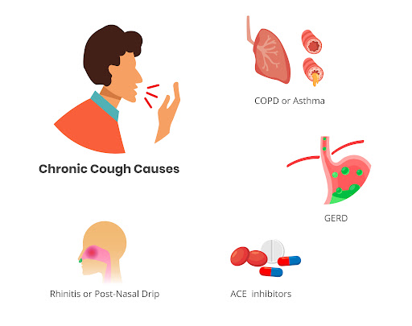

What is Allergic Reactions ?
- In an emergency such as a severe allergic reaction (anaphylaxis) or an asthma attack where breathing is difficult, call triple zero (000) and ask for an ambulance.
- Anaphylaxis needs emergency first aid. The first line treatment is injection of adrenaline (epinephrine) into the outer mid-thigh. Do not allow the person to stand or walk. Give further doses of adrenaline if there is no response after 5 minutes.
- If your doctor says you are at risk of a severe allergic reaction, be sure to carry a device to inject adrenaline (EpiPen® or Anapen®) and a mobile phone to call for help.
Common Symptoms
Symptoms of a severe allergic reaction include:
- Difficult or noisy breathing
- Swelling of the tongue
- Wheeze or persistent cough
- Difficulty talking or hoarse voice
- Persistent dizziness or collapse
- pale and floppy (young children)
- swelling of the lips, face and eyes

Emergency first aid for severe allergic reactions
A severe allergic reaction (anaphylaxis) is life-threatening and requires urgent action.
- Lay the person flat – do not allow them to stand or walk.
- Give adrenaline injector (such as EpiPen® or Anapen®) into the outer mid-thigh.
- Phone an ambulance – call triple zero (000).
- Phone family or emergency contact.
- Further adrenaline may be given if there is no response after 5 minutes.
- Transfer person to hospital for at least 4 hours of observation.
Always give adrenaline injector first, and then asthma reliever puffer if someone with known asthma and allergy to food, insects or medication has sudden breathing difficulty (including wheeze, persistent cough or hoarse voice) even if there are no skin symptoms.
Be prepared for severe allergic reactions
If you are at risk of a severe allergic reaction, make sure you:
- Have an ASCIA Action Plan for Anaphylaxis.
- Carry a mobile phone to call for help when needed.
- Carry an adrenaline injector (EpiPen® or Anapen®) to treat a severe allergic reaction.
- Consider wearing medical identification jewellery – this increases the likelihood that adrenaline will be administered in an emergency.
- Avoid medication (where possible) that may increase the severity of an allergic reaction or complicate its treatment – such as beta blockers.
- Avoid the known allergen where possible.